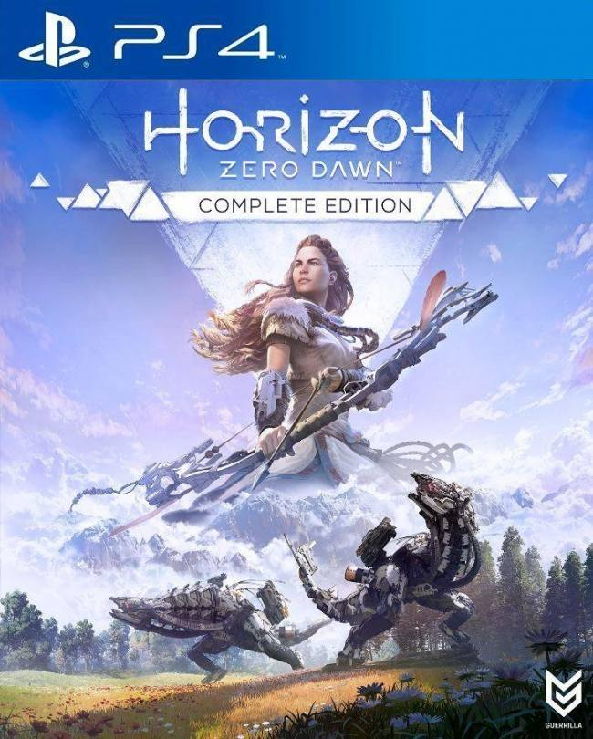
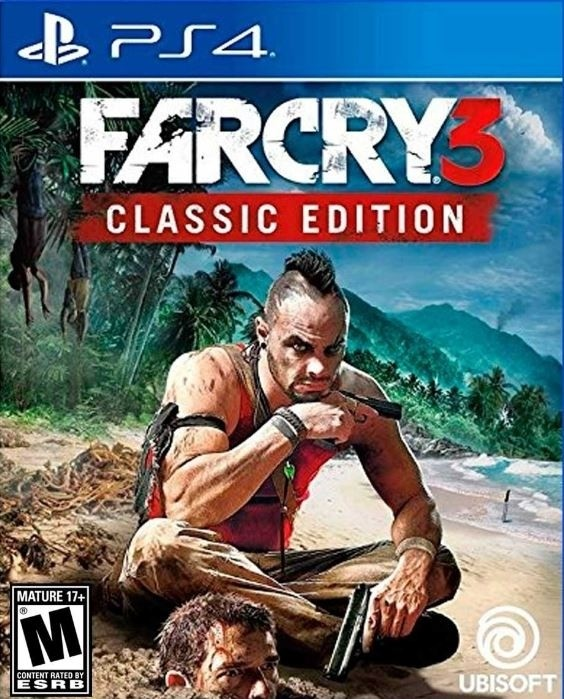
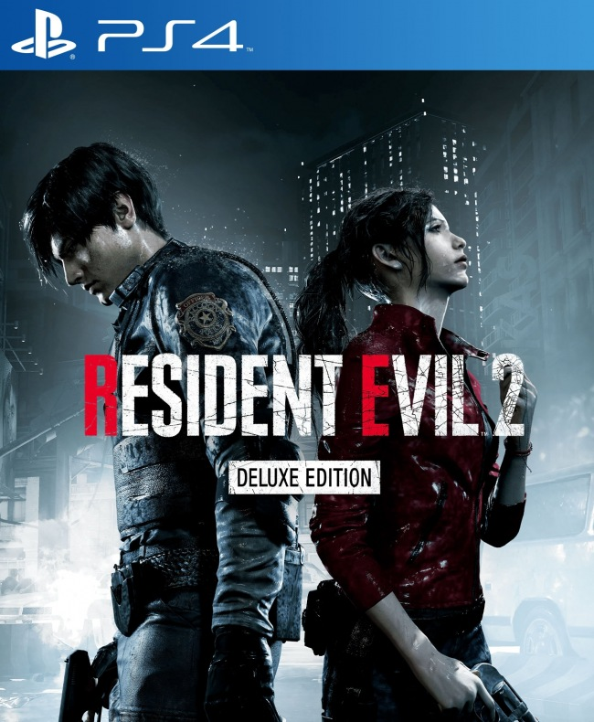
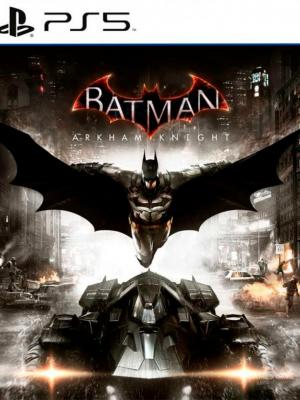
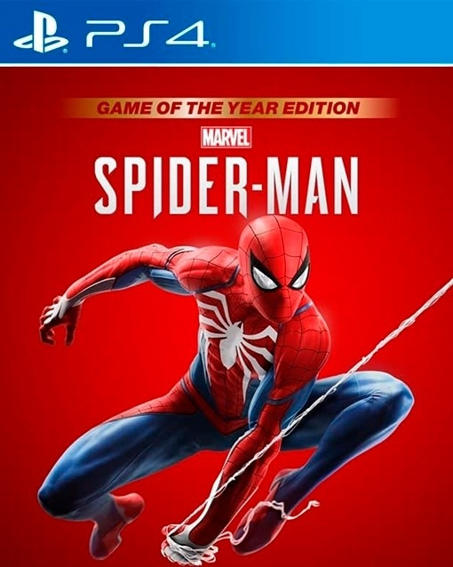
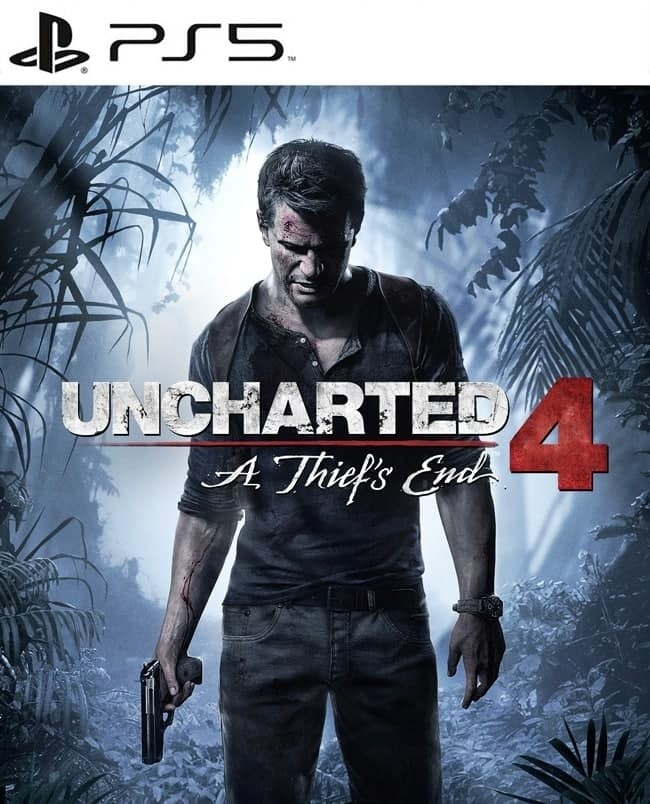
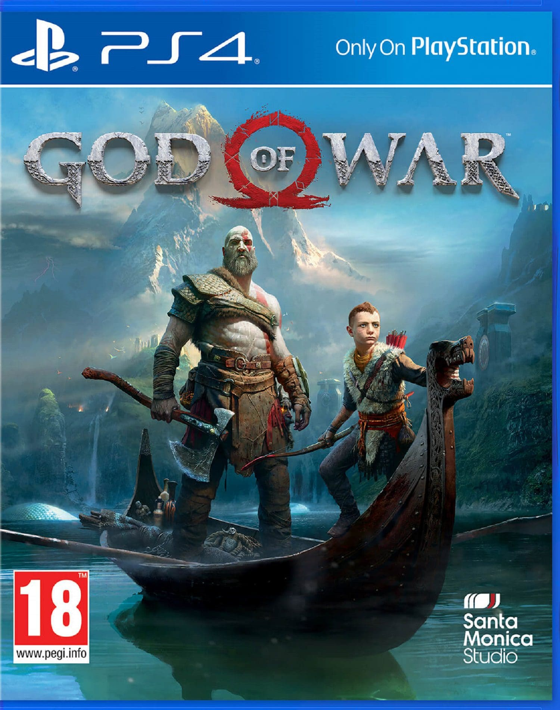
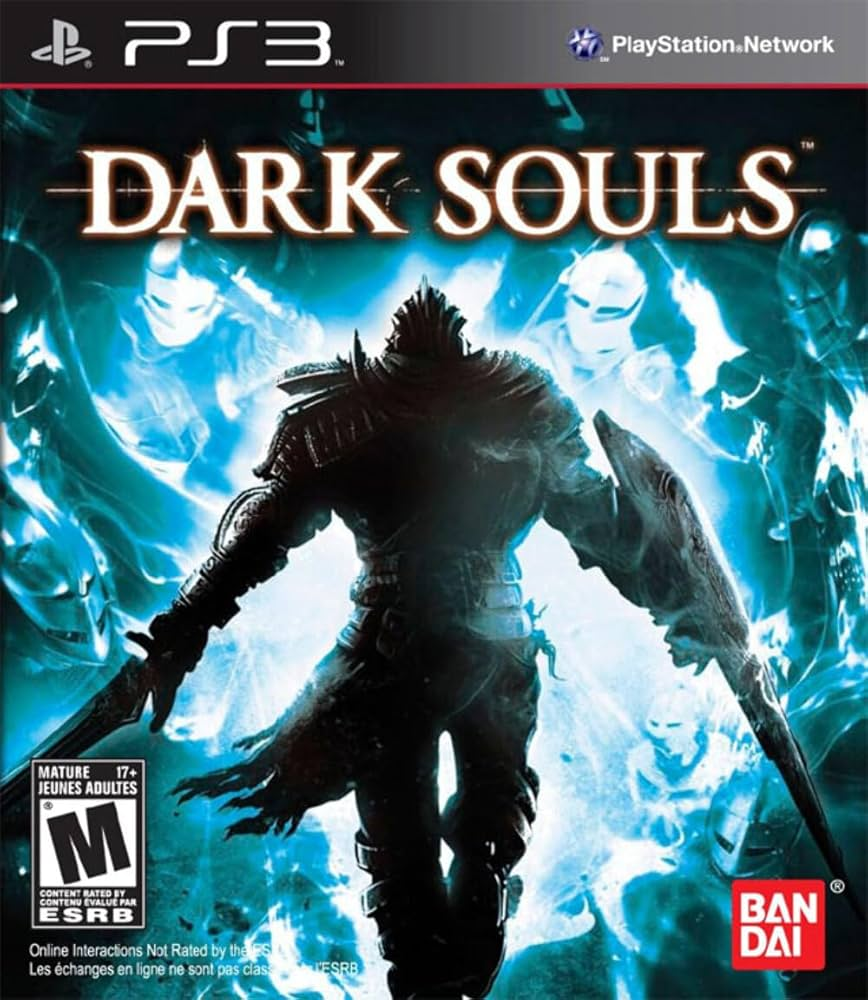
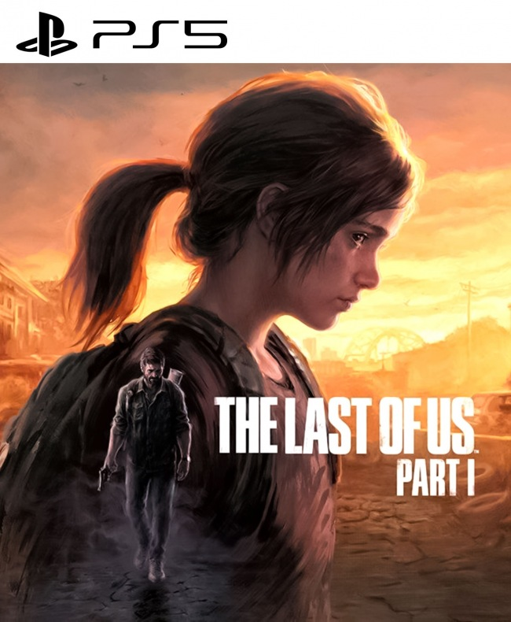
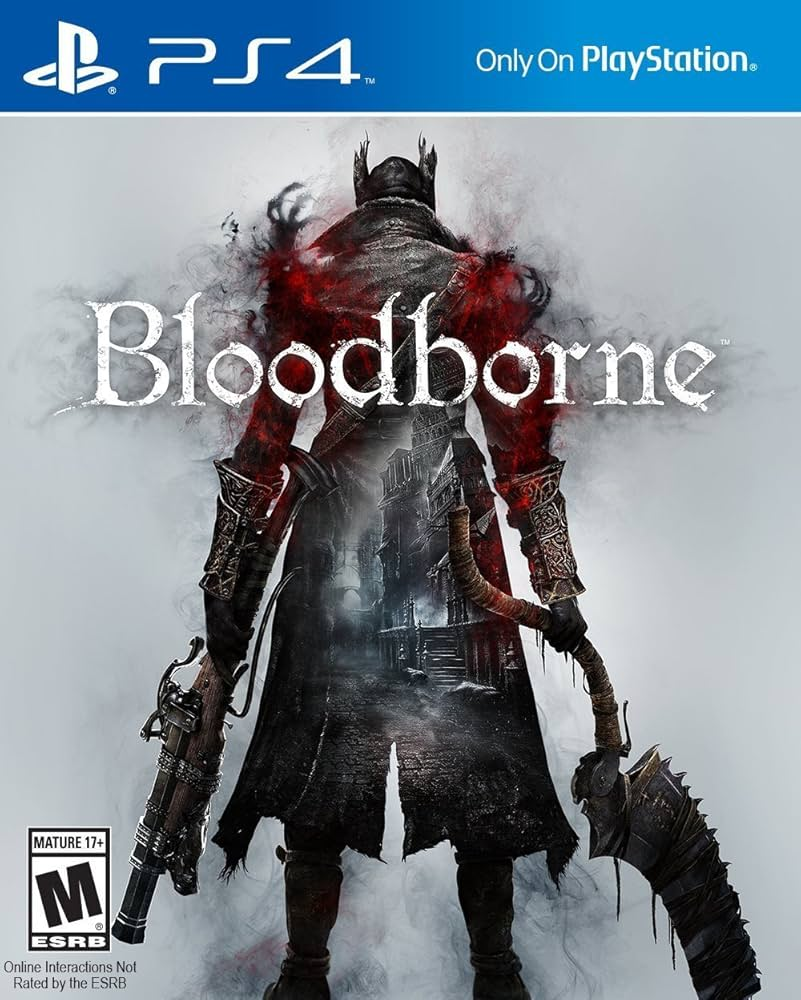

N.º 10: HORIZON ZERO DAWN

Historia: En un mundo postapocaliptico dominado por maquinas, Aloy, una joven cazadora, busca respuestas sobre su origen y el pasado de la humanidad.
Graficos: Presenta paisajes naturales y maquinas detalladas con efectos de luz y clima que ofrecen una experiencia visual impresionante.
Musica: Mezcla sonidos tribales y futuristas que crean una atmosfera envolvente en la exploracion y el combate.
Diversion: Su mundo abierto, combates variados y libertad de estrategia hacen que jugarlo sea una experiencia muy entretenida.
N.º 9: FAR CRY 3

Historia: En una isla tropical controlada por piratas y traficantes, Jason Brody debe rescatar a sus amigos y sobrevivir mientras se enfrenta a peligros y descubre hasta donde esta dispuesto a llegar para sobrevivir.
Graficos: Ofrece paisajes tropicales realistas con playas, selvas y montanas, acompanados de efectos de luz, agua y fuego que crean una ambientacion muy inmersiva.
Musica: Combina ritmos intensos y ambientales que refuerzan la tension y la accion, adaptandose a cada momento del juego de forma dinamica.
Diversion: Su mundo abierto lleno de misiones, exploracion y combates intensos brinda una experiencia de juego variada, emocionante y muy adictiva.
N.º 8: RESIDENT EVIL 2 (REMAKE)

Historia: En medio de un brote zombie en Raccoon City, Leon y Claire intentan escapar mientras descubren los secretos de una corporacion responsable del desastre.
Gráficos: Muestra escenarios oscuros y detallados con efectos de luz, sombras y lluvia que aumentan la tension y el realismo en cada momento.
Música: Usa sonidos ambientales y melodias tenues que crean una sensacion constante de peligro y mantienen al jugador en suspenso.
Diversión: Su mezcla de accion, exploracion y resolucion de acertijos ofrece una experiencia intensa y equilibrada que atrapa desde el inicio.
N.º 7: BATMAN ARKHAM KNIGHT

Historia: Gotham esta al borde del caos y Batman debe enfrentarse al Espantapajaros y al misterioso Caballero de Arkham, mientras lucha por proteger la ciudad y enfrentar su propio pasado.
Gráficos: Presenta una ciudad oscura y detallada con efectos de lluvia, luces y sombras que crean una atmosfera impresionante y fiel al universo de Batman.
Música: La banda sonora combina temas epicos y tensos que acompañan perfectamente la accion, el sigilo y los momentos emocionales del juego.
Diversión: Su mundo abierto, combates fluidos, uso del Batimovil y libertad para explorar hacen que la experiencia sea dinamica, intensa y muy entretenida.
N.º 6: MARVEL'S SPIDERMAN

Historia: Peter Parker debe equilibrar su vida como heroe y civil mientras enfrenta a nuevos y clasicos villanos que amenazan Nueva York con una gran conspiracion.
Gráficos: Ofrece una ciudad vibrante y detallada, con efectos de luz, clima y animaciones fluidas que hacen que recorrer Nueva York sea visualmente espectacular.
Música: La musica orquestal acompana cada momento con energia, desde las persecuciones aereas hasta los momentos emocionales de la historia.
Diversión: Balancearse entre rascacielos, combatir con estilo y explorar misiones secundarias hace que jugarlo sea emocionante, variado y adictivo.
N.º 5: UNCHARTED 4: A THIEF'S END

Historia: Nathan Drake se ve obligado a salir de su retiro cuando su hermano Sam, que pensaba muerto, aparece pidiendo su ayuda para encontrar un antiguo tesoro pirata.
Gráficos: Los gráficos son impresionantes, con paisajes exuberantes, detalles finos en los personajes y animaciones realistas que hacen que cada momento sea visualmente atractivo.
Música: La banda sonora es épica y emotiva, perfecta para las escenas de acción y las interacciones más personales, añadiendo mucho al tono general del juego.
Diversión: El juego ofrece una mezcla perfecta de exploración, acción y resolución de acertijos, con un sistema de combate fluido y cinemáticas que hacen que cada momento sea una experiencia cinematográfica.
N.º 4: GOD OF WAR (2018)

Historia: Kratos, ahora padre de Atreus, se embarca en un viaje por el mundo nórdico para esparcir las cenizas de su difunta esposa, enfrentándose a dioses y monstruos en el camino.
Gráficos: Los gráficos son de una calidad impresionante, con un mundo abierto detallado, efectos visuales impactantes, y un estilo artístico que mezcla lo mitológico con lo realista.
Música: La música es grandiosa, con un enfoque orquestal que acompaña perfectamente la acción y las escenas emocionales del juego, creando una atmósfera única.
Diversión: El combate es brutal, y la interacción entre Kratos y Atreus añade profundidad al juego. La exploración del mundo y las batallas épicas hacen que cada momento sea emocionante.
N.º 3: DARK SOULS

Historia: En un mundo oscuro y devastado, el jugador controla a un no-muerto mientras explora y lucha contra criaturas horribles para descubrir el misterio detrás de la maldición de la inmortalidad.
Gráficos: Los gráficos, aunque sombríos, tienen un nivel de detalle impresionante en los escenarios, enemigos y efectos, que crean una atmósfera oscura y envolvente.
Música: La banda sonora tiene piezas sutiles pero dramáticas que refuerzan el tono sombrío y épico del juego, manteniendo al jugador inmerso en su desafiante mundo.
Diversión: Es un juego desafiante, con mecánicas de combate profundas y un mundo interconectado que invita a explorar y a superar dificultades. Es un juego que recompensa la paciencia y la estrategia.
N.º 2: THE LAST OF US

Historia: Joel y Ellie, dos sobrevivientes de una pandemia que ha devastado el mundo, deben enfrentarse a bandas de humanos hostiles y a una nueva raza de infectados mientras navegan por un Estados Unidos destruido.
Gráficos: Los gráficos son extraordinarios, con paisajes urbanos desolados y detallados, acompañados de animaciones realistas que ayudan a sumergir al jugador en la atmósfera del juego.
Música: La música es conmovedora, con melodías que enfatizan la emoción de la historia y las relaciones entre los personajes, sin dejar de crear tensión en los momentos de acción.
Diversión: Combina exploración, combate táctico y resolución de acertijos, pero lo más destacable es la narrativa, que es profundamente emocional y mantiene al jugador conectado durante todo el viaje.
N.º 1: BLOODBORNE

Historia: El jugador toma el rol de un cazador en la ciudad de Yharnam, un lugar sumido en una plaga sobrenatural, mientras lucha contra monstruos y desentraña los oscuros secretos de la ciudad.
Gráficos: Los gráficos son magníficos, con un estilo gótico oscuro que se mezcla con elementos del horror cósmico, creando un mundo inquietante y fascinante a la vez.
Música: La banda sonora es intensa, con melodías que aumentan la tensión durante los combates y momentos de misterio, lo que contribuye enormemente al tono macabro del juego.
Diversión: Ofrece un desafío alto con un combate rápido y exigente, donde cada victoria se siente significativa. El diseño del mundo y las batallas contra jefes son especialmente memorables.